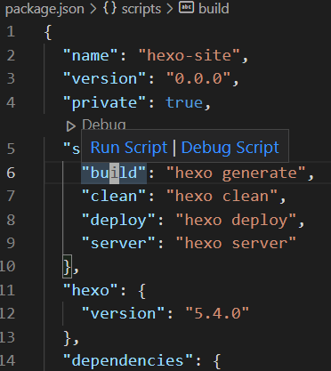
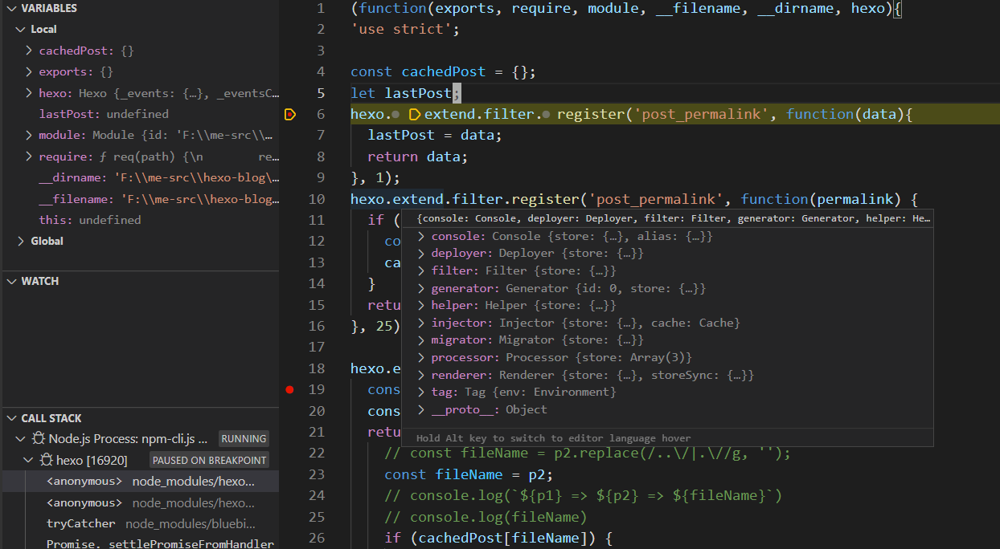

当下两种静态博客 Hugo 和 Hexo 都很出色，都是将 markdown 格式的文件编译成 html。 Hugo 是用 go 语言来写的，Hexo 是用 node.js 来实现的。但是在经过了一年多的 Hugo 使用之后，终于下定决心切换到 Hexo。这里记录了自己的一些使用心得，比较和一些小技巧。
发布到 GitHub
注意到 Hexo 是发现 Github 可以 host 静态博客，并且 Hexo 默认支持直接发布到 Github
https://myencyclopedia.github.io/archives/
共同优点
总的来说，hugo 对于不懂前端但是想部署博客的同学来说是很友好的。但是，对于会大前端的同学，需要在静态页面上加入动态元素需求，hexo 是比较完美的解决方案。
下面是我在考虑静态博客时的一些两者都满足的特性：
| 需求点 | Hexo | Hugo |
|---|---|---|
| Markdown 源文件 | ✔ | ✔ |
| 代码高亮 | ✔ | ✔ |
| Latex支持 | ✔ | ✔ |
| 多语言频道 | ✔ | ✔ |
| 发布到github.io | ✔ | ✔ |
| Markdown 中引用其他页面 | ✔ | ✔ |
| 桌面版+手机版 | ✔ | ✔ |
| 嵌入 Youtube B站视频 | ✔ | ✔ |
| 用户评论 | ✔ | ✔ |
Hexo 优势
当遇到默认框架无法支持的功能时，两者的差别就体现了出来。
Hugo 的插件系统主要是通过 shortcode 来完成。记得之前为了开发hugo最简单的 shortcode 花费了九牛二虎之力，既包含了部署 Go语言环境，也包含调试开发的小插件，由于开发工具的匮乏，只能通过log打印出来内部状态，非常花时间。另外，配置 mathjax 等也花了很多时间，出现莫名其妙的 quote 错误时只能不断试错，没有明显的错误提示。又比如，很多时候需要调整编译 pipeline 来完成类似图片加水印，图片文件压缩等功能，也没有简便方案。
Hexo 则相反，首先它有着更丰富的插件。其次，可以很方便的通过 node.js 生态来开发新插件，控制编译 pipeline。当然，这需要对 npm，javascript 等大前端的编程环境比较熟悉，所以 hexo 很适合前端程序员。又比如，hexo 可以实现手机版上很炫酷的无线下滚的前端 js 功能，或者类似于微信公众号的图片异步加载功能，这些都是 Hugo 无法简单完成的。可以说，使用大前端 js 的hexo将静态的markdown编译和动态的客户端技术完美结合为一体。
| 需求点 | Hexo | Hugo |
|---|---|---|
| 新文章自动提交 Google Baidu 收录 | ✔ | ❌ |
| 图片水印 | ✔ | ❌ |
| 简单搜索支持 | ✔ | ❌ |
| SVG 动画 | ✔ | ❌ |
| 内嵌 PDF 阅读 | ✔ | ❌ |
| 方便的插件开发 | 比较方便 | 比较麻烦 |
集成 Typora
在 VS Code 中调试插件
VS Code 以及支持调试项目中npm 或者 yarn 安装的 node.js 模块，这对于开发或者改动第三方插件来说非常方便，具体方法如下。
打开 package.json，将鼠标放在 scripts 的目标中，会弹出 Run Script | Debug Script。

选择 Debug Script 在 node_modules 中相关源文件中设置断点，就可以调试了！

评论
shortnamefor Disqus. Please set it in_config.yml.